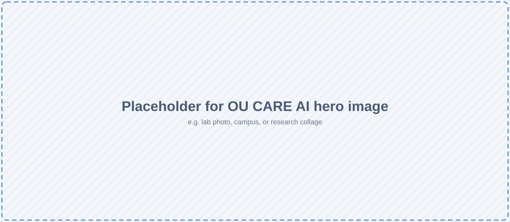
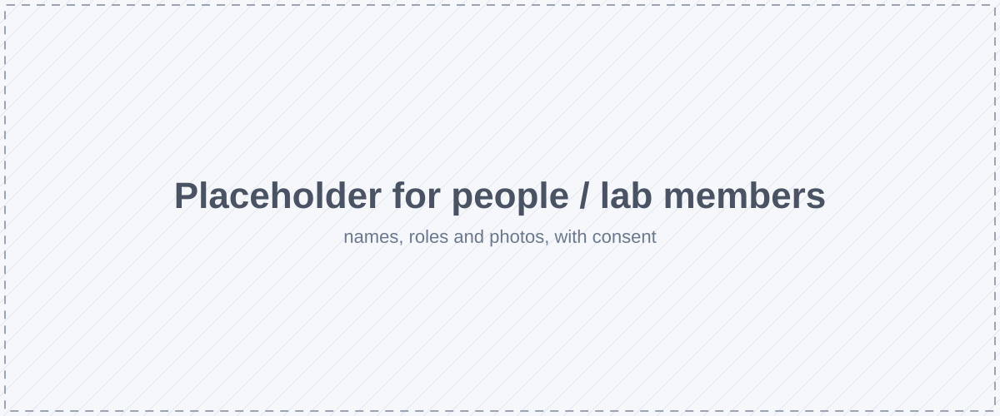

About
Placeholder: a short mission statement.
Our work centers on three areas: AI for cybersecurity and trustworthy AI, efficient AI at the edge, and AI for autonomous systems. Much of it runs on national research infrastructure through the NAIRR Pilot, which also lets us offer training that needs nothing more than a browser.

Projects
-
NSF NAIRR Pilot Expansion · with WPI
Advancing AI Research with NAIRR: Workshop Series on Cybersecurity, Edge AI, and Autonomous Driving
Two annual workshop series, twelve workshops over two years, that give researchers and students hands-on training on NAIRR resources. NSF awards #2528533 and #2528534.
-
In development
Self-service research VMs
A request-and-approval process for Oakland University research groups to get Jetstream2 instances, with automatic idle shutdown, so nobody needs administrator access to the shared cloud project.
-
Placeholder
Placeholder: another project, grant, or REU program
Research computing
We run a JupyterHub on Jetstream2 for our workshops, and the same allocation supports a small number of Oakland University research groups, including REU students, working with the project.
Access is by invitation. If your group would benefit, contact us. We'll explain how the shared allocation works and what we can support.
People
Placeholder: faculty, students, and staff, with roles. The NAIRR project team is listed on the workshop series site.
